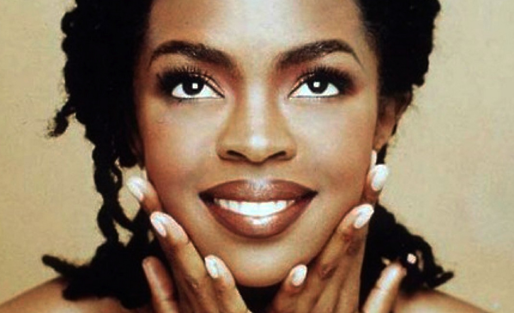

YESHA CALLAHAN,
MARCH 26, 2015
Each year the Library of Congress selects 25 recordings to add to their archive. This year Lauryn Hill’s record-breaking album, The Miseducation of Lauryn Hill, will be included in the 25. According to the press release, requirements for inclusion into the archive include recordings that are “culturally, historically, or aesthetically significant” and are at least 10 years old. The Library of Congress gave a lengthy explanation as to why they chose Hill’s debut album. Detaljnije...